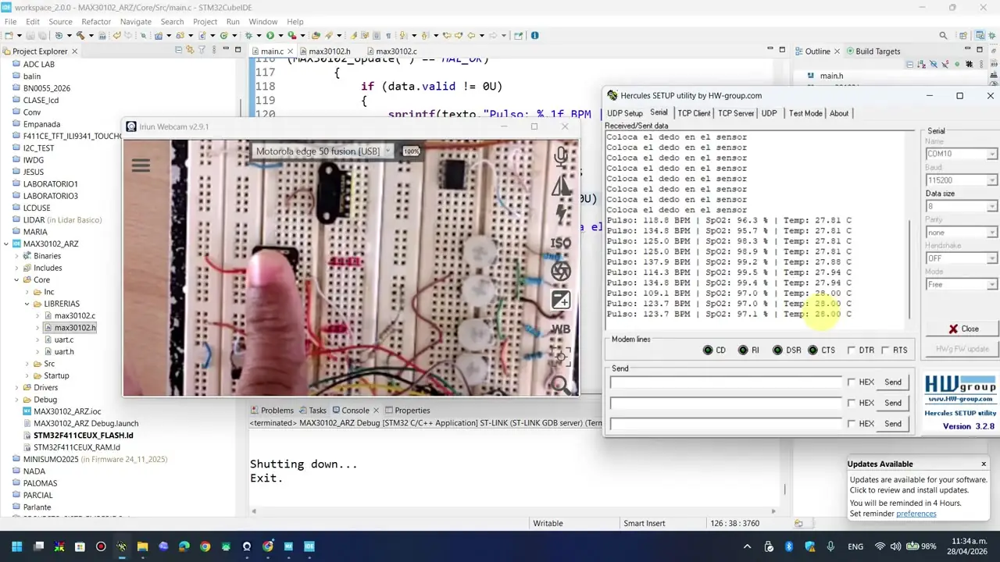

Con el STM32F411CEU activamos el cristal y el reloj al máximo, I2C1 a 400 kHz y USART1 a 115200. El proyecto se llama MAX30102_ARZ.
El sensor es sensible a la electricidad estática: usa manilla antiestática al soldarlo.
El MAX30102 mide pulso cardiaco y saturación de oxígeno con un LED rojo y uno infrarrojo, y además la temperatura del chip. No es de grado médico, pero sirve como referencia. Configuramos el STM32F411 con I2C1 a 400 kHz y USART1, agregamos la librería max30102 (hecha con ayuda de IA y ajustada a mano), ajustamos la configuración (frecuencia, corrientes de los LED, límites de pulso y umbral para detectar el dedo) y leemos todo con una sola función en el while.

Con el STM32F411CEU activamos el cristal y el reloj al máximo, I2C1 a 400 kHz y USART1 a 115200. El proyecto se llama MAX30102_ARZ.
El sensor es sensible a la electricidad estática: usa manilla antiestática al soldarlo.
Copiamos max30102.c/.h y uart.c/.h en LIBRERIAS, los agregamos al path, activamos printf con float y declaramos el buffer de texto.
En max30102.h se configura el puerto I2C; la dirección del sensor es fija y no puede haber otro dispositivo con la misma en el bus.
#include "max30102.h"
#include "uart.h"
/* USER CODE BEGIN PV */
char texto[100];MAX30102_DefaultConfig(&config) carga una configuración inicial que luego se puede modificar:
sample_rate_hz: 50, 100, 200 o 400 (con 50 o 100 a veces no lee bien la SpO2).
led_red_current y led_ir_current: corriente de cada LED; de ellas depende que detecte el dedo.
min_bpm y max_bpm: límites válidos del pulso.
finger_threshold_ir: umbral del IR para saber si hay dedo; muy bajo puede no detectar y muy alto tarda.
MAX30102_DefaultConfig(&config);
config.sample_rate_hz = 200U; // 50 100 200 400
config.led_red_current = 0x24; // corriente leds rojo
config.led_ir_current = 0x24; // corriente del led ir
// limites del pulso
config.min_bpm = 50U;
config.max_bpm = 140U;
// para detectar el dedo
config.finger_threshold_ir = 10000U;Si el sensor responde, enviamos "SENSOR OK"; si no está conectado o está dañado, "SENSOR BAD".
if (MAX30102_Init() == HAL_OK) uartx_write_text(&huart1, "SENSOR OK\r\n");
else uartx_write_text(&huart1, "SENSOR BAD\r\n");Revisa en max30102.h si tu versión de MAX30102_Init recibe la configuración (&config).
MAX30102_Update() lee y procesa todo. Si la lectura es válida, los datos quedan en data.bpm, data.spo2 y data.temperature_c. Si no hay dedo, data.finger_present vale 0.
while (1)
{
if (MAX30102_Update() == HAL_OK)
{
if (data.valid != 0U)
{
sprintf(texto, "Pulso: %.1f BPM | SpO2: %.1f %% | Temp: %.2f C\r\n",
data.bpm,
data.spo2,
data.temperature_c);
uartx_write_text(&huart1, texto);
}
else if (data.finger_present == 0U)
{
uartx_write_text(&huart1, "Coloca el dedo en el sensor\r\n");
}
}
HAL_Delay(200);
}El sensor promedia muchas muestras y es lento: cuando hay dedo, retrasa el resto del programa.
Sin dedo aparece "Coloca el dedo en el sensor". Al ponerlo, tarda un rato (unos 15 s) procesando y luego muestra pulso, SpO2 (alrededor de 98 %) y la temperatura.
El pulso a veces sale algo alto; la librería se puede seguir puliendo.
La temperatura es la del chip (ambiente), no la del dedo.